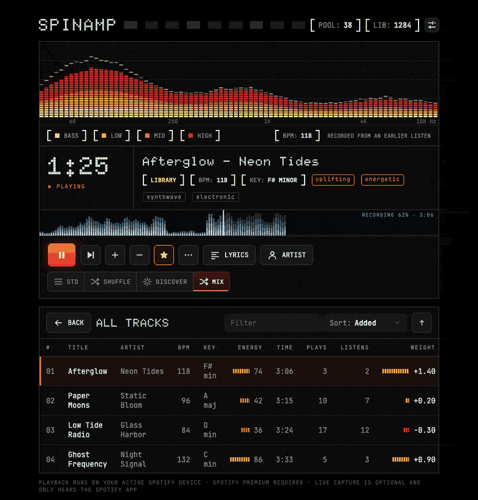

Playlists that
learn what you love
Spinamp is a playlist-first desktop player for Spotify. Smart shuffle that remembers your thumbs, discovery of artists you'd like, playlists built from a sentence, synced lyrics, and a visualizer that follows the actual song.
Free and open source under the MIT license.

Try it
Needs Spotify Premium and the Spotify desktop app. Spinamp controls it, so your music keeps playing through Spotify.
Homebrew
brew install --cask hollis-labs/tap/spinampor one line
curl -fsSL https://spinamp.fm/install.sh | shmacOS 13 or newer, Apple Silicon or Intel. The installer checks the download against the published checksum. Prefer to read it first? It's short.
PowerShell
irm https://spinamp.fm/install.ps1 | iexWindows 10 or 11. Early releases aren't code-signed yet, so SmartScreen may show a notice: choose More info, then Run anyway. Windows support is newer and less tested; live capture is macOS-only for now. Read the script.
Or grab the installers directly from GitHub Releases.
First run: connect Spotify (2 minutes)
Spotify requires every app to use a Client ID, and Spinamp doesn't ship one, so you create your own. It's free and stays on your machine.
- Go to developer.spotify.com/dashboard and create an app. Add the redirect URI
http://127.0.0.1:43821/callback. - Open Spinamp, click the settings icon, and paste the app's Client ID.
- Open the Spotify tab and press Connect. Then import a playlist and press play, with the Spotify desktop app open.
What's inside
Built around playlists, and around knowing your music.
Shuffle that listens
Thumbs up and down count more the more you repeat them, fade with time, and a thumbs-down cools a track off. Favorites run hotter. Mute a song for a day, a week or a month, or block an artist or genre for good.
Discovery
Finds artists like the ones you love, checks they're playable, and mixes them in at a ratio you choose. Vote on a discovery and it joins your library.
Playlists from a sentence
"45 minute chill commute, no loud spikes." Built from your own library to the exact length, using tags, tempo, energy and mood. AI is optional and uses your own key.
A visualizer that follows the song
Four colour layers across the spectrum. With live capture (macOS, opt-in) it hears the Spotify app and remembers each song's shape, which fills in a timeline of the whole track.
Lyrics and artist info
Time-synced lyrics when they exist, plus a panel with the artist's bio, members and links.
Knows your tracks
Tempo, key, mood and loudness measured on your machine. Plays versus real listens, ignoring the hours you leave it running overnight.
Private by design
Your library is yours.
No account, no tracking. Your library, votes and listening history live in a local database. Sign-in tokens and any AI key are kept in your system keychain. Spinamp talks only to Spotify and a few public music-data services (MusicBrainz, ListenBrainz, LRCLIB, Deezer, Wikipedia), and to the AI provider if you turn that on with your own key.
Live capture is off until you say so. It hears only the Spotify app, turns audio into a few numbers every 50 ms, and discards the audio immediately. Sharing those song fingerprints with the community database is a separate, opt-in choice, and nothing is shared yet.